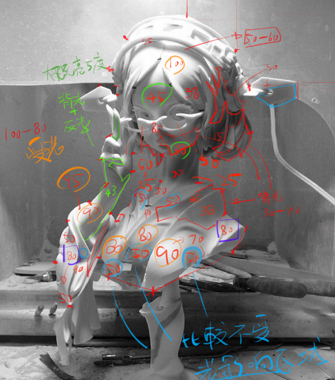
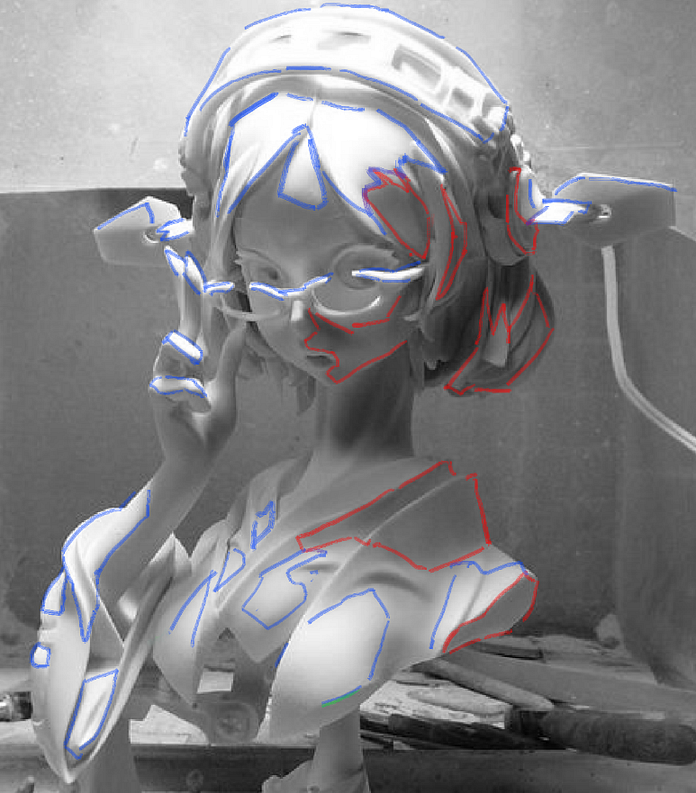
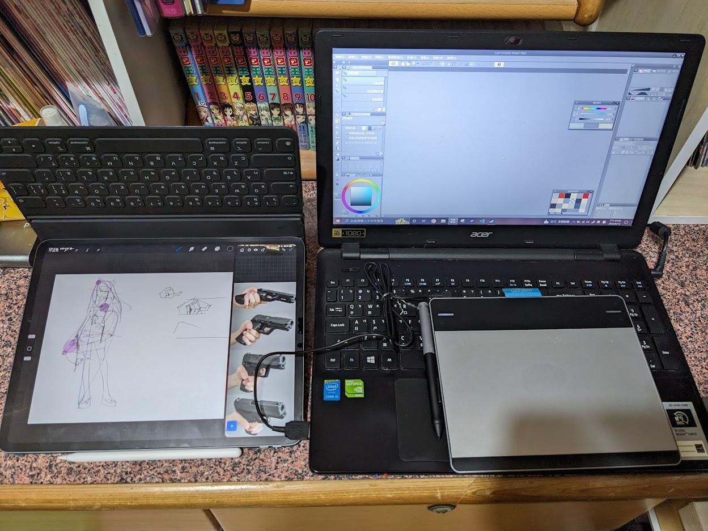

做為一名電腦圖學(Computer Graphics)出身且有一點數位繪圖(Digital Painting)經驗的人來說，在整個大學和研究所期間都一直有想聊聊這兩者之間的關係，直到最近求學生涯算是告一個段落，再加上近年的AI繪圖愈發火熱，我才下定決心來寫這一系列的文章。
作為一名程式員，我們總是有一個貪婪的想法，我們想將「美」化約成數個元素，利用不同的數學模型(model)想方設法地去擬合(Fitting)不同的風格，用客觀的事實去理解主觀的感受，因為理論上要能夠定義「美」，那麼就一定能夠寫程式。
將「美」用冰冷的規則束縛住，使它不再神秘，使他不再美。
這件事情如此矛盾卻有無數人前仆後繼的追求這個聖杯，我不知道最近火紅的AI Art會不會是終極的解答，倘若是，那我們對這個產生「美」的AI又能了解幾分呢？所以我們不妨將視野拉回過去，看看前人如何追尋，從電腦圖學發展的路徑來探究美術。
引言
我從電腦圖學中學到灰階(Grayscale)、樣條曲線(Spline Curve)以及高斯模糊(Blur)等專有名詞，另一方面在學習電繪的過程也會看到素描關係、曲直、虛實等概念，某種程度上，彼此好像有某種關係，例如：電腦可以用絕對的數值去描述一個像素的灰階值，但我們是否能夠定義黑、白、灰各自的範圍？顯然這是做不到的，因為黑白灰是相對的感受。
就像是K大在許多課程所描述的，我們雖然不能用絕對的數值去一概而論，可是若在分析繪畫的時候能夠借助絕對的數值就可以更具體的理解一些相對的概念

依據灰階值去分析大致的區塊

大致的黑白灰分布
我在塑造練習時會用數值來記錄黑白灰的各自的範圍，他們的數值不是重點，重點是你下筆的時候會有意識到你畫的是「黑」的部分，且在數值上不能畫到「灰」或是「白」的數值範圍，因此「電腦的角度來看美術」這件事可以幫助我們理性的理解人感受到的感性。
從電腦看美術
美，是一個相對主觀的感受，倘若在一個浮動標準上則難以討論，或者說討論前需要有大量的前提與共識，因此，我們透過電腦將「畫」數位化後成「圖」之後，其重點不是每個像素的數值，而是我們可以用一個共通的標準，來有意義討論繪畫。
因為過去在討論繪畫的時候，如果基礎的認知有偏差，往往會導致進階的溝通無法繼續，舉例來說，可能你認為的黑是30，而他認為的黑是10，那接下來要討論調子時可能就會牛頭不對馬嘴，換言之，數位化就是我們討論繪畫的一種共通語言。
然而，在電腦這個平台上衍生出的電繪，或者準確地說是數位繪畫(Digital Paining)，無論板繪或是螢幕繪，使用手指或是觸控筆，小畫家或是PS，雖然是不同的媒介，但最終仍是將其進行不同程度的數位化，將其顯示的螢幕上或是印刷到紙張上，這都都會利用到電腦圖學，因此我們不妨進一步將視角專注在電腦圖學是如何表現數位美術的。
從電腦圖學看數位美術
或許在一定程度上「如同電腦、機器般的思考繪畫」這麼說似乎有些令人排斥，但是，至少到目前為止，絕大多數現有電腦中的繪圖軟體還是人寫出來的，換言之，電腦的思考就是無數工程師思考後的結晶，也是無數人實驗並且反覆驗證的結果，也就是說，這些看似無趣的知識、規則，卻是客觀上最科學的解釋。
因此這就是這個系列【圖與畫】的動機，我會儘量講的白話一些，當然，我更希望的是能夠普及一些電腦圖學的知識，也企圖系統化傳統美術的一些概念，讓繪畫的藝術家可以理解很多功能為甚麼可以這樣設計，電腦圖學的工程師可以理解一些抽象的概念。

現在以及過去的電繪設備： Ipad Pro 12.9 + procreate 以及 繪圖板 + CSP
--
如果想支持繼續寫【圖與畫】系列文章歡迎給我GP或是贊助！

--
【圖與畫】系列是我在大學+研究所一直想動筆的系列，目前已經想好的主題約有十篇，因為仍有其他的筆記、文章要寫，同時又要畫圖，當然也要工作，因此暫定是以月更的形式慢慢寫，也就是應該會是長達一年的系列文章。
這個系列算是對圖學領域做一個科普，也算是彌補這幾年說好要寫相關文章沒有寫的遺憾，考慮Medium寫文章的排版比較好看，巴哈會以短篇的形式來做(目前是放引言的部分，之後可能考慮變成濃縮版?)，這邊也開始嘗試贊助或斗內，總體來說，算是一個實驗兼整理吧。
以上！